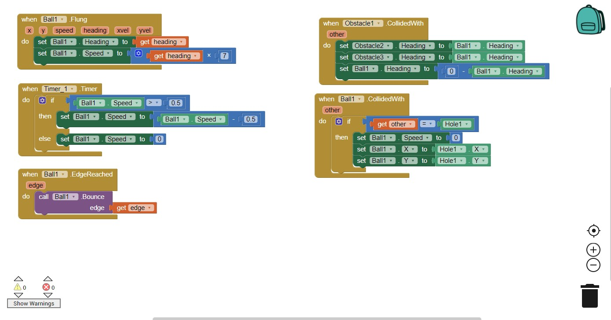
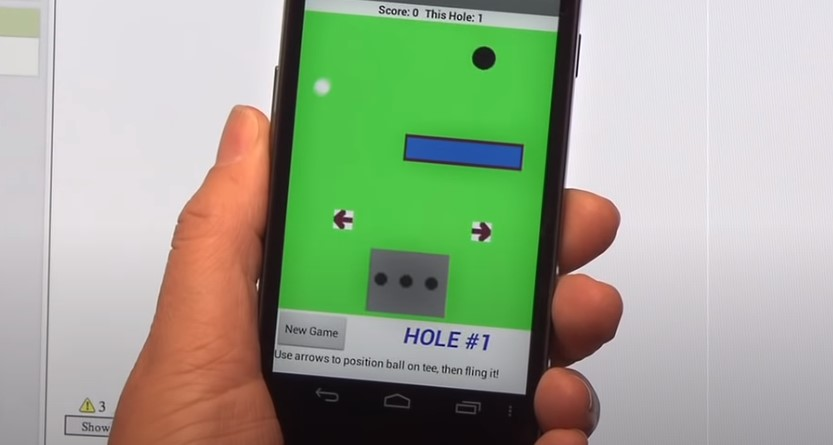
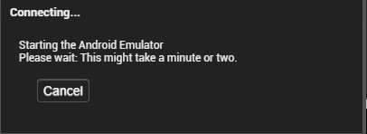
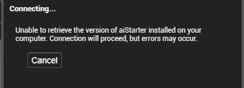
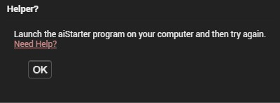
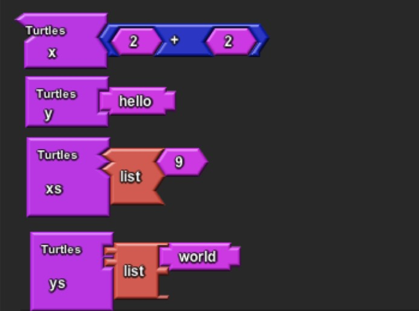
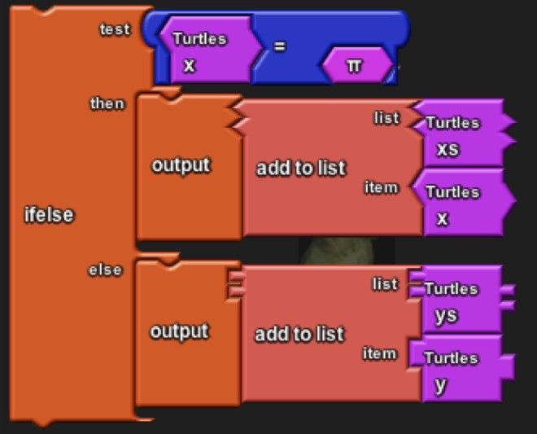
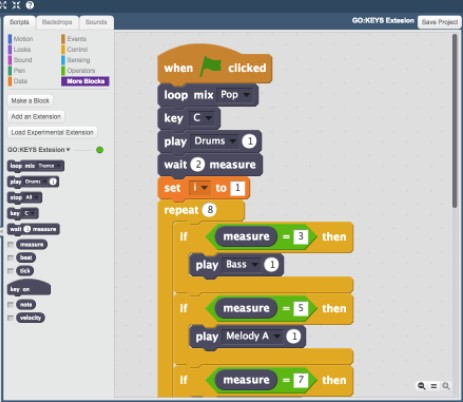

“Bounce the ball in Mini Fling It In!” and “Pass through the obstacles to win”. Those are some examples that I’ve mentioned regarding the aims and goals of our game that we will develop through the use of the MIT App Inventor website. However, if things don’t go as planned, we will take things into consideration as soon as possible. This includes stating the most crucial aspects of the game, which include the blocks editor (as this will indicate the overall behaviour of the game) and the emulator component (as it will indicate if the project will run successfully or not). Also, the rest of our team needs to be cautious in terms of the components that need to be prioritised such as the blocks editor, as this generates the behaviours that are expected in the game (e.g. when an obstacle is colliding with the ball), and also the emulator (MIT App Inventor n.d.). The specific blocks editor of the project is below here:
Our team is accountable and responsible for the punctuality aspect of the overall completion of this game. This means that if there were such circumstances that hindered the completion of the game, we would not have that much time to do so that will result in less time for our main goal, which is to present its final product and it’s definitely expected to be ready for marketing against other small market apps in the App Store and Google Play Store, and work all the up to the very top, to face big time mobile gaming companies like Supercell (who created apps like Clash of Clans and Boom Beach). Lastly, to justify the game, the reason we are constructing this game is that we want to create a game for the individuals of all ages that will make them feel excited due to its low complexity playing level and the overall simplicity of it. It’s best played when they are exhausted from work, study, errands, and other commitments. Lastly, this will make the game more playable and addicting.
“Mini Fling It In!” is a mobile game designed to achieve the pinnacle of modern day mobile gaming needs. It started originally as a draft in the first assignment through the use of MIT App Inventor, not knowing what to do next. Because of that, Smart was inspired by the aspect of “simplicity” and “low complexity”, which describes the game it is now, to make the game as playable as possible. He watches the app inventor tutorials via YouTube for additional inspirations. Through that, he was able to stick to a flicking ball game, in which we call “Mini Fling It In!” today.
It’s progression wasn’t easy, as a developer needs to put time and effort to know the basics of the components of the app inventor such as the designer (which designs the user’s interface through on and off screen components) and blocks editor (to control the overall behaviour of the game) (MIT App Inventor n.d.). Smart took roughly around 1-2 hours just to design 10% of the game, but managed to complete the project in under 24 hours, as he took the approach step by step slowly through learning in app inventor tutorials on YouTube. However, there were requirements that didn’t exceed the expectations of the game, including a better description of current comparable games and in-depth discussion of the technologies behind its development and running. It also needed to have had a greater expansion in the tools and skills component, which focuses on the backend technologies behind the MIT App Inventor, identifying how they could integrate as the scope of the game creation and deployment in a brief manner. The next assignments later, the descriptions are clear and the tools and technologies have been expanded, containing excellent detail on the game build and skills. We also built a good list of market and niche needs that we can further expand moving forward.
It’s current state is slightly better than previously, as we fixed the issues and potential risks mentioned above. This is also evident through the use of implementing a successful test run using the emulator multiple times, which will determine the outcome of the game. However, we experienced ups and downs during the current state of the game. This includes experiencing some dead-ends of the game (e.g. there were times that the emulator just stops working and the inability to use 3D objects due to their current skills), questionable decision making within the team (e.g. delaying some components by not catching up to the assignment’s deadline). That’s the reason why the project in A1 and A2 hasn’t seen the finished product, but we are so close in this assignment. Nonetheless, there were ups that we had experienced during our project (e.g. the overall positive feedback we got in the previous assignments, even if there were small mistakes, and the time to see its final product of the game in this assignment is nearer). Also, there were no changes implemented in this project, and we will stick to the way it is.
Despite finding its identification of the game’s market niche (mainly all individuals in all ages and gamers), the gaming project will consist of further development, mainly regarding the expansive marketing approach needed to sell consistently within the market. Currently, Smart, the Lead Developer, is maintaining and developing high-quality gaming to achieve the appropriate user experience, and in turn fit the criteria for a mobile game. Aside from the software, the business intends to initiate extensive work on the ‘target market’, to ultimately achieve commercial success.
It is fortunate that the project took well under 24 hours to complete, with the expertise of Smart’s developing skills and creativity within the app inventor. Smart will be able to lead the current team, and any new members, as his expertise of the entire project is vast. With the establishment of goals, the team has been set with a structure to work with.
Thus far, the team’s approach to overall success has been established, and the short-term to long-term goals have been set to provide the consistency needed to maintain effective leaps forward. The near future goals involve other minor adjustments to the game such as bugs that will cause lagging and the freezing of the user’s screen at times, customer demographic analysis, and many more.
As of right now, we have set roles for our team in this project idea as Smart as a Lead Developer and Edward as a Lead Marketing Analyst. However, changes may be implemented from week to week depending on the overall progress of the project. But for now, we’ll stick to our main roles.
Smart is in charge of planning and assisting of the timeline and the development of the product, giving constructive feedback to marketing or sales teams, and providing general design guidance, which includes the foundation and early stages of a product's development. In order for him to do that, he must possess good communication skills, a better knowledge of the product, the understanding of the business problem that’s being solved by a software, the understanding of other disciplines that include product development, management, or marketing, and a good understanding of the field of the software’s users are involved at (e.g. HR department) (Hickey, J 2019). Lastly, it is reasonable that Smart has been elected as a Lead Developer for this project due to it being overall fleshed out and it also covered all of the required areas (e.g. overview, motivation, description, tools and techniques, and required skills). Also, the project idea’s description was certainly comprehensive. However, there were improvements that need to be implemented, which include having a broader description of current comparable games and in-depth discussion of the technologies behind its development and running, and greater expansion in the tools and skills component that focuses on the backend technologies behind the MIT app inventor, identifying how they could integrate as the scope of the game creation and deployment in a briefly manner. This was when he constructed this project idea in Assignment 1, and some improvements have been implemented in Assignment 2 and some will be implemented in the future moving forward.
As a lead market analyst, Edward is in charge of aiding the company in terms of decision-making regarding the products and services to sell. Also, its consumer target and the conclusions by studying market conditions, competitors' activities and consumer behaviour. Also, he is responsible for the data collection of the competitors’ tactics, market conditions and consumer demographics, research customers’ opinions, buying habits, preferences and wants/needs. Also, lead market analysts like Edward study the competition’s prices, sales numbers and the distribution and marketing methods. Lastly, it is reasonable that Edward has been elected as a lead market analyst as he is completing Actuarial studies, which heavily links on finance, business, and analytics, and he can use those skills as his experience for the job.
The software that consists of this game includes such inspirations from languages such as Scratch and StarLogo TNG, which gives users the ability to build a smartphone app for their needs to be met. The operating and computer systems include GNU/Linux (Debian 5 or higher and Ubuntu 8 or higher), Windows (Windows 7, Windows Vista, and Windows XP), and Macintosh with an Intel Processor (Mac OS X 10.5 or higher). Also, the browser requirements include Mozila Firefox 3.6 or higher, Apple Safari 5.0 or higher, Google Chrome 4.0 or higher, which are mandatory for the app inventor to run successfully. However, Microsoft Internet Explorer isn’t recommended and reinforced for MIT App Inventor to run for your projects.
In this project, we will test our game when the lead developer will go to the “emulator” component of the MIT App Inventor as a user test. The emulator will indicate if your app/project will run successfully and ready for marketing in the App store and Google Play store. This is an example of how the emulator works:

The lead developer will also go to the “emulator” and connect it to the other team member’s smartphones before uploading the game to app stores as a final product. This will also occur when there are any other concerns regarding the project (e.g. technical issues, emulator problem, and many more). Approximately we will need around 5-10 team members that specialises in different fields that include technical designer, user interface designer, and many more.
The risks that we have identified as a team consists of minor crashes/bug errors which will cause lags or freezing on your device. Also, one of the most noticeable risks include an emulator error. See below:



It is also one of the most dangerous risks in our project as the emulator is an indicator whether your app will run successfully for App Store or Google Play Store via MIT App Inventor. Minor usage of software that is run through MIT that include inspirations from StarLogo TNG and Scratch (which are used as programming languages for apps for children) will also be evident, as our team is still enhancing their skills on these programming languages and not just sticking to the basics moving forward.
Examples of StarLogo TNG:


An example of Scratch:

Also, there will be times that the app/game will only work mostly on Android devices only, and my team is working on also running it in Apple devices. Another risk that we looked at is the lack of 3D graphics, which means that we had to stick to 2D features and models of the game (e.g. obstacles such as rectangle fences) as our team is not yet capable of implementing 3D features (as of now) based on our skills. For example, the fences in the “Mini Flick It In” will be as is, regardless of app/software updates. Lastly, risks in terms of hardware isn’t really that major as we have the required hardware/desktop for our project/game to run successfully. We would recommend using operating and computer systems that include Windows XP, 7+, Vista and Macintosh (Mac 10.5, X or 10.6+), and GNU/Linux (Debian 5+ and Ubuntu 8+).
The group consists of two individuals that have focused solely on one IT project. Initially, the decision was to meet twice a week, with work decided beforehand. The group communicated well with external applications, as well as through Microsoft Teams. Smart and Edward managed to meet frequently to continuously stay up-to-date with the set of tasks that were set out after each Microsoft Teams meeting.
Smart communicated very effectively, and quickly provided feedback on how to improve the overall communication of the team. By keeping up-to-date and remaining focused on the overall objectives of the assignment, the “Mini Fling It In!”.The team has managed to effectively communicate and achieve its goal. Specifically, the communication methods involved a breakdown of the assignment, along with its rubric. Each meeting provided the opportunity for the group to then further continue on working independently, given the environment.
The meetings will continue to take place for all of the group’s work, typically as much as possible. Given that the work was split between less workers, the time spent for each increased. Smart managed to co-ordinate the team’s efforts, and in turn the team provided the necessary quality of work.